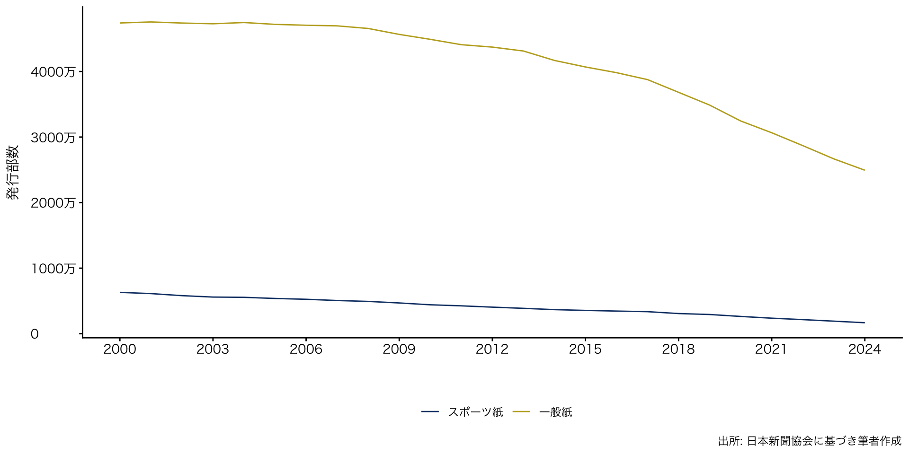
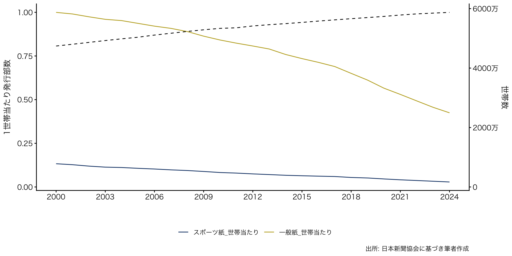
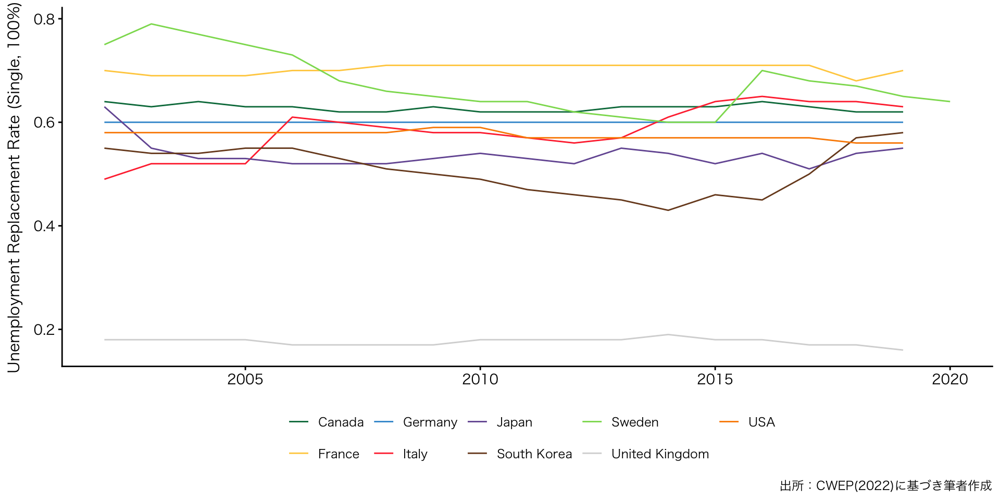
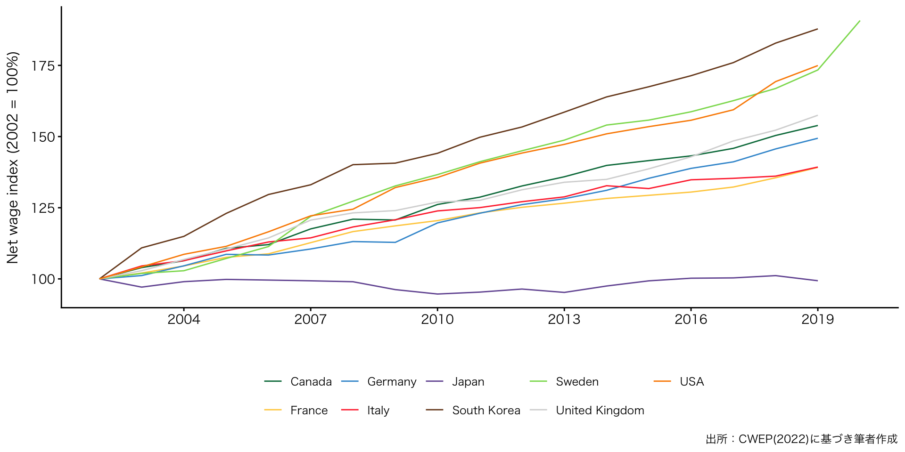
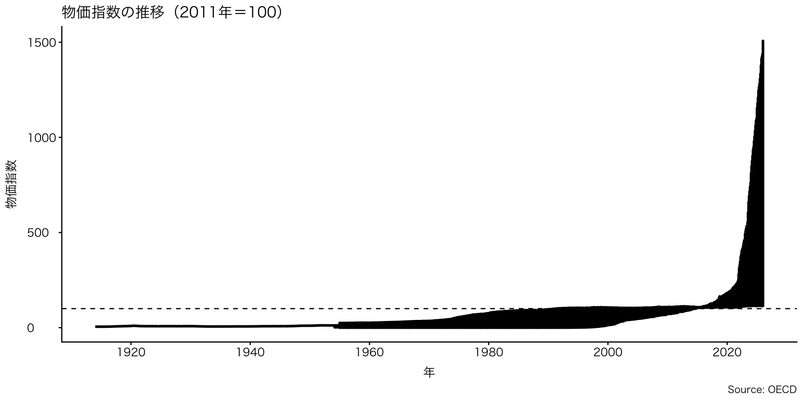

政治学概論Ⅰ《2025》
#2 福祉国家と現代日本の課題
![]()
December 17, 2025
KEYWORDS
- こたつ記事；小熊モデル；福祉国家；福祉政策；エスピン＝アンデルセンモデル
Ⅰ. 前回の振り返り（授業の感想）
授業の感想
政治参加の参加動機を集団行為論からまとめている箇所
政治参加や投票率が低いことは悪だという風に社会全体で言われている中、自分もなぜ政治の状況になっているのかは気にしたことがなかった。しかし、集団行為論の「個人が行動しても成果を独占できないため、参加動機が弱くなりやすい」と指摘している点がとても腑に落ち、自分の意思決定が結果に必ずしも反映されないという点は政治参加の動機として大きく作用する重要な点だと思ったから（大石さん）。
- 朝日新聞電子版「松江城天守より高いマンション「景観損なう」 一部の解体求め提訴へ」（2025年12月4日）
授業の感想
政治学を教えるにあたって、学習指導要領や教科書をただ伝えるのではなく政治学を学ぶ意義を教員自身が理解しなぜこの現象が発生しているのかや理想と現実の開きといった問いにも問いにも踏み込んでいく必要があると考えた。また「恵まれた環境で恵まれた人がいるし、そうじゃない人もいるよねで終わってしまうなら政治学はいらない」という指摘が面白いと感じた。
政治学はなぜその現象が発生するかなど、社会の構造的なところから問い直していくものであり、教科書の内容をこなすだけでは建前や原則論にとどまってしまい、結局は理想であるのではと錯覚してしまう可能性がある。また現在の政治制度に対する批判的視点や課題の発見も難しくなってしまう。また「恵まれた人もいればそうでない人もいる」で世の中が解決するならば不平等をなくすための制度や法律は不要になり政治そのものはいらなくなるという指摘に納得したから（小野さん）。
授業の感想
公民 公共 政治学教育に問題があるのでは
これは社会科教育の問題点であり重要な点だと思う。だと思う。つまり、今の社会科は変わりつつはあるけど、目的が教科書の太字の暗記で終わっているのではないかと思う。前任の社会科教育学の先生はそこを変えようとしておられて、探究的な授業、生徒が主体的に考え意見を持てる授業を作るように口酸っぱく言われていた。なので、社会科授業を教える•教えようとしている身として、暗記や指導要領をこなす、入試のための社会科ではなく、生徒が主体的に考え、議論できるような社会科を目指す必要があると考える（片山さん）。
授業の感想
「公民」/「公共」/「政治学」教育に問題があるのではないかという点で、直接的な責任と間接的な責任の二つが重要だと感じました。
自分が一年前に受けていた特に疑問を抱かずに当たり前だと受けてきた学習内容に関する点での中学・高校教育の責任と、教育学部生として自分が受けている教員を養成する大学の責任の二つが、去年まで高校生だった自分と今の自分とでかなり身近な責任の問題だと感じたから。「推し活」というような形での政治への興味の持ち方や、最近では表現が正しいかはわかりませんが小泉さんを持ち上げるようなSNSの投稿を見ました。自分の政治の見方は適当なのか見直してみようと考えました（河田さん）。
授業の感想
高校の社会科授業が面白くない
この前、自分の母校の高校に母校体験活動という実習のような形でいって授業を見たが、ただ教科書やノートに書いてある情報を教えるだけで面白くなかった。先生が動画の中でおっしゃられているように、それがなぜ問題とされているのかというように、なぜの部分を全く考えておらず事実だけを学び、自分で調べたりしていないというところが面白くない要因であると感じた（喜多川さん）。
授業の感想
学校における政治的中立性について教師の中にはそれが政治的意見をもたないと捉える人がいるという点。
教師は政治についてあまり言及しないということは知っていたが、総務省には政治教育に配慮した記述があるということは初めて知った。政治的中立性と政治的意見を持たないことと同義である傾向について、実際私の高校では各政党の政策はおろか選挙や政治の動向でさえも学ぶ機会はほとんどなかったように思う。しかし、政治が私たちの生活と密接に結びついていることを考えるとある程度教師の考えを表明することは重要で、子どもたちも政治について考えるきっかけになる（前田さん）。
Ⅰ. 初回アンケート
初回アンケート > アンケート回答率
- 対象者：政治学概論I（2025年度）受講生
- 実施方法：Googleフォーム

初回アンケート > 希望進路
- Q3. 希望の校種を教えてください（複数選択可）

初回アンケート > 希望進路
- Q4. 希望の専門教科を教えてください（複数選択可）

- 5%未満（=1名）のラベルは表示していない
初回アンケート > 希望進路
- Q5. この授業を受講した理由は何ですか？（複数選択可）

- 5%未満（=1名）のラベルは表示していない
初回アンケート >
初回アンケート > ニュース
- Q10. 「こたつ記事」という言葉を聞いたことがありますか？

初回アンケート > 探究学習
- Q11. 探究学習は好きでしたか？

初回アンケート > 探究学習
- Q12. 探究学習のテーマは、進路ややりたいことにつながっていますか？

こたつ記事 > 新聞の発行部数
こたつ記事 > 1世帯当たり新聞発行部数
Ⅳ. 「不安な個人、立ちすくむ国家」をめぐって」
リーディングアサインメント
p.11の「つまり、あなたがたのリアリティから出発しているためのバイアスが根本的な問題なのです。」という部分が重要だと思った。
自分の置かれた立場から述べられた話は、バイアスがかかっていることが前提として考えなければ、その話の対象とはならない存在からすればおかしいなと感じる部分になるのだと考えなければならないのだということを特に感じさせられたから。また、バイアスがかかっていることを自身がレポートを書くときにいつでも意識することができる人はどれほどいるのか疑問に思ったことも理由としてある（河田さん）。
リーディングアサインメント
「昭和の人生すごろく」13頁
正社員になって定年まで勤めあげる生き方をしているのが1950年代生まれで34％しかいないというのが面白いと感じた。当時は一つの道を究めることが至上という風潮だったのではないかと考えていて、本文にも「正社員のお父さんは、終身雇用で一生クビにならない」とあるにもかかわらず、実際に勤めあげる人が少ないというのが意外だった（小松原さん）。
リーディングアサインメント
「トータルピクチャーを理解するには、勉強をして自分の持つバイアスを相対化しなければならない。」（12ページ）という考えが重要だと思った
自分自身がバイアスを持っているという自覚をしっかり持つことは、政治を考える上でも、教員という職業においても重要だと感じたから。この記事を読みながら、私は大学進学が可能であることを当然とする家庭環境を持つ友人に囲まれて学生生活を送ってきたという事実を強く実感した。政策がどのような生活環境を想定してつくられているのかを考えることは、教員が生徒一人ひとりの家庭環境に寄り添った指導を行うことにもつながると考える（角田（すみた）さん）
リーディングアサインメント
p16 『バブル世代以上の人って、「日本は努力したら報われる社会なんだ」という意識がすごく強いですよね。実体験からくるんでしょうけど、貧困＝自己責任という考えで凝り固まっていて、それが自分のアイデンティティとつながってしまっている感じです。』
世代によって貧困に対する問題意識に違いがあり、世代によって貧困とは無意識のうちに、努力して働いたら貧困からは脱出できるという考えがあるということに驚いた。現在の社会での貧困問題は社会構造がきっかけである可能性もあり、誰が貧困になってもおかしくない時代に私たちは直面しているが、少し前の時代は、努力をすれば貧困からは脱出できるという考えを持つような時代であったため、同じ政治課題を共に解決するためにも互いの時代背景を理解していく必要があると感じた（髙尾さん）。
リーディングアサインメント
「霞が関のバイアスを外す」ために行った取り組みとそこから感じたこと（p.12-14)
須賀さんの発言において、「典型的な人生だと思っていた数字がどう計算してもそれ以上にならず、自分たちはわかっていなかったのだ」と痛感したという部分が重要な視点だと感じたため。また、この場面において、自分たちが勉強不足であったことに気づいたこと、この気づきによって、たくさんの分野の本を読むようになったという発言が特に印象的だったため。ここでの事例のように、私たちは自分が過ごしてきた環境が「普通」であると思い込んでしまう節があることを再確認した。こうしたバイアスに対応していくために、様々な問題に対処する際には、より意識的に物事を多角的かつ多面的にみていく必要があるなと感じた（西田さん）。
リーディングアサインメント
「被害者比べ」という言葉（資料内１８ページ）
「自分が一番の被害者なんだ」と考えてしまうあまり現状を狭い視野でしか捉えられなくなり、その視野の外を無視するような状況に陥ってしまうのは、社会を分析する上で危険な状態だと考えた。特に、様々な背景や価値観を持つ子どもたちを導く教員を目指す自分には致命的で、今一度視点というものを考え直す必要があると感じた（福田さん）。
Ⅶ. 福祉国家論
aa

aa

Replacement rate: Couple (50-50%), 2 earners, 2 children

aa
- 福祉国家が、標準的労働者をどの程度保護しているか
- 製造業の生産労働者（production worker）が、標準的な就業条件で働いた場合に、税・社会保険料を差し引いた後に手元に残る賃金
- 各国のネット賃金を、ある基準年の値＝100 として再尺度化した指標
aa
aa

aa
aaa
Ⅶ. 次回の授業と宿題
次回の授業と宿題
次回
- 福祉国家と現代日本の課題
- 12月17日（水）の配信を予定
宿題
- 授業の感想：
- 回答先： Google Form
- 締め切り：12月15日（月）23時59分
- リーディング・アサインメント：
- 回答先：Google Form
- 締め切り：12月15日（月）23時59分